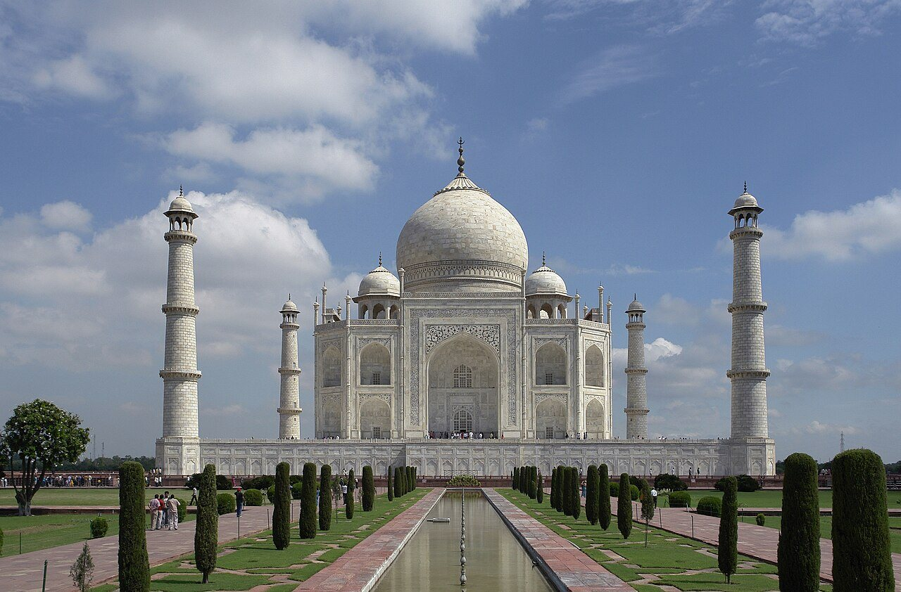
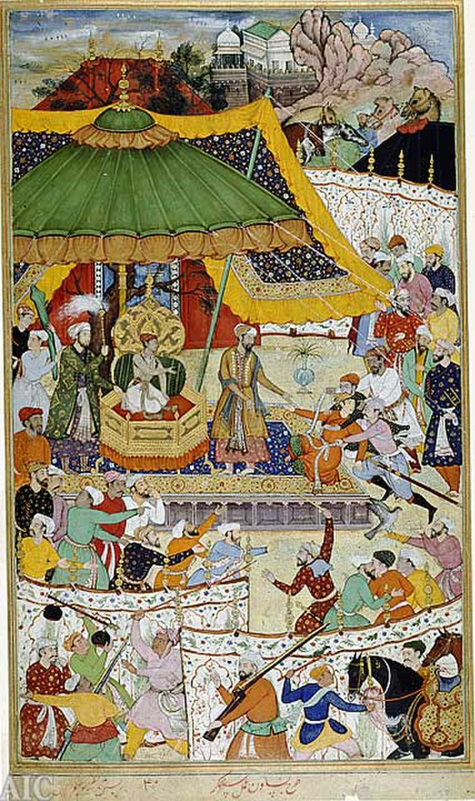
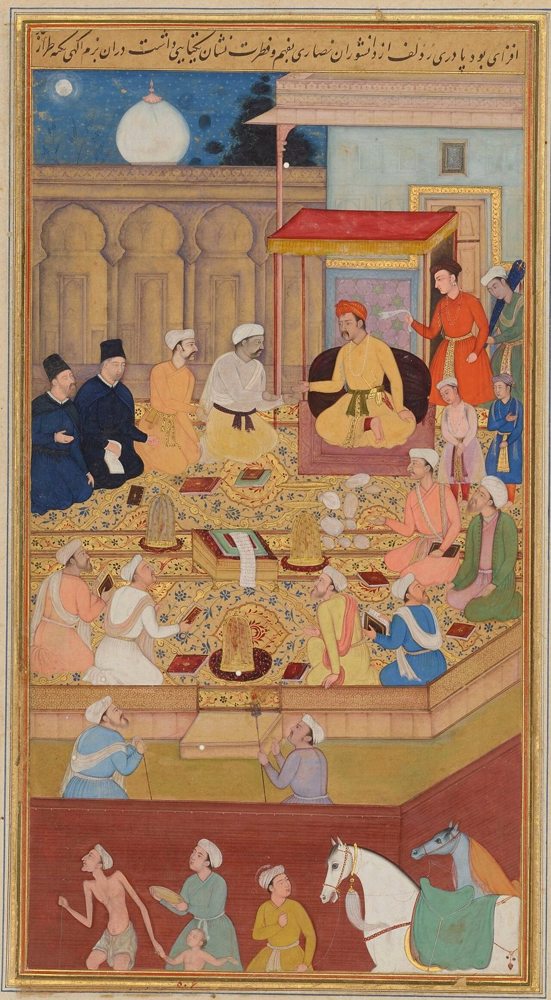

사진 · 인도 아그라의 타지마할
중학교 역사① · 4단원 지역 세계의 교류와 변화
타지마할무굴 제국
타지마할 · 사진 Yann · CC BY-SA 4.0
“무굴 제국은 믿음이 다른
무굴 제국은 믿음이 다른
사람들을 어떻게 다스렸을까?
사실무슬림 황제, 힌두교도가 많은 땅
해석아크바르와 아우랑제브
확장오늘의 인도
1526
사실바부르가 북인도로 들어오다
해석티무르와 칭기즈 칸의 후손
확장대포와 기병

사진 · 아크바르는 누구를
곁에 두었을까?
아크바르는 누구를
곁에 두었을까?
사실재위 1556~1605
해석라지푸트 왕족과 손잡기
확장공으로 매긴 계급(만사브)
『아크바르나마』 삽화, 아크바르의 궁정(16세기 말) · 퍼블릭 도메인
1564
사실아크바르가 지즈야를 없애다
해석비무슬림의 세금 부담
확장3단원 지즈야와 잇기

사진 · 검은 옷의 두 사람은
누구일까?
검은 옷의 두 사람은
누구일까?
사실이바다트 하나의 토론
누가황제의 신하가 쓴 역사책 삽화
사실·주장모든 종교에 열린 황제?
『아크바르나마』 삽화, 이바다트 하나의 종교 토론(16세기 말) · CC0
모두와의 평화
사실술흐이쿨
해석종교 정책일까, 정치 전략일까
확장둘 다일 수는 없을까
사진 · 이 무덤을 지은 사람은
누구일까?
이 무덤을 지은 사람은
누구일까?
주문황제 샤 자한
만든 사람건축가 · 석공 · 노동자
비용백성의 세금
타지마할 · 사진 Yann · CC BY-SA 4.0
인도·이슬람 문화
우르두어페르시아어 + 힌디어
무굴 회화페르시아 화풍 + 인도
시크교두 종교 사이에서
1679
사실아우랑제브가 지즈야를 되살리다
해석정통 이슬람을 앞세우다
확장라지푸트 · 마라타 · 시크의 반발
내가 황제의
신하라면?
넓은 제국을 하나로 묶는 정책 하나를 건의한다면
“믿음이 다른 사람들을 함께 다스리려면 이 필요하다.